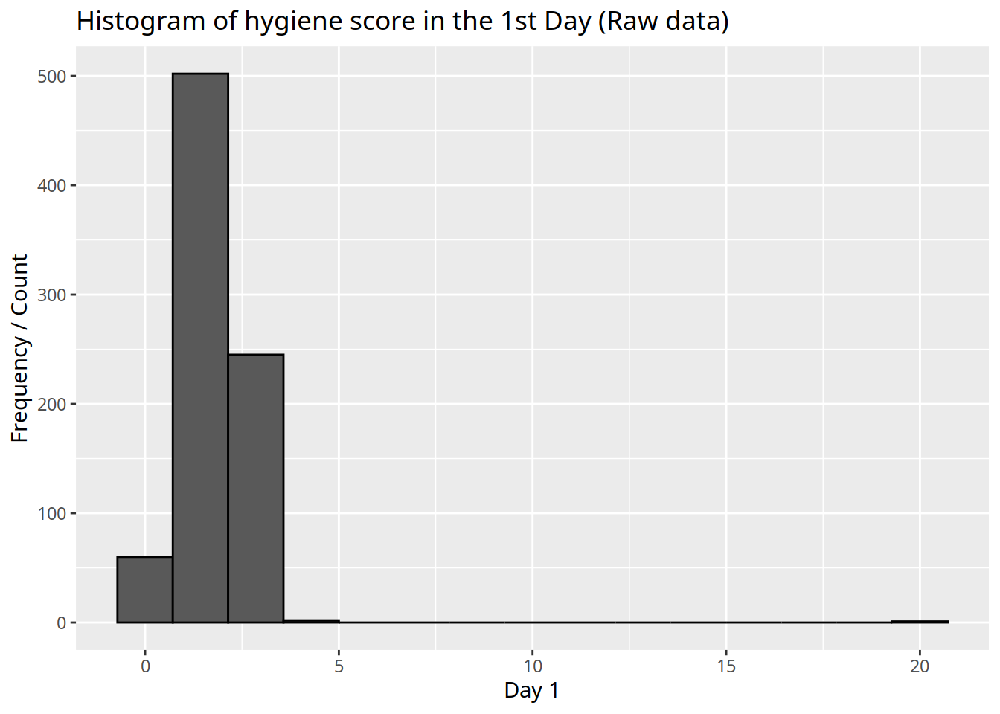
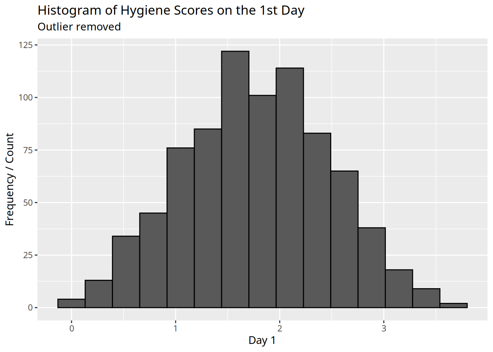

library(ggplot2)
library(dplyr)
Attaching package: 'dplyr'The following objects are masked from 'package:stats':
filter, lagThe following objects are masked from 'package:base':
intersect, setdiff, setequal, unionbase-r version 4.3.3
library(ggplot2)
library(dplyr)
Attaching package: 'dplyr'The following objects are masked from 'package:stats':
filter, lagThe following objects are masked from 'package:base':
intersect, setdiff, setequal, union# Using `foreign` is truly a pain for handling SPSS data, I'll use heaven instead.
download_festival <- haven::read_sav('./datasets/download.sav')print('A summary and structure of this dataset')[1] "A summary and structure of this dataset"summary(download_festival) ticket_no gender day_1 day_2
Min. :2111 Min. :1.000 Min. : 0.020 Min. :0.0000
1st Qu.:3096 1st Qu.:1.000 1st Qu.: 1.312 1st Qu.:0.4100
Median :3620 Median :2.000 Median : 1.790 Median :0.7900
Mean :3616 Mean :1.769 Mean : 1.793 Mean :0.9609
3rd Qu.:4155 3rd Qu.:2.000 3rd Qu.: 2.230 3rd Qu.:1.3500
Max. :4765 Max. :3.000 Max. :20.020 Max. :3.4400
NA's :546
day_3
Min. :0.0200
1st Qu.:0.4400
Median :0.7600
Mean :0.9765
3rd Qu.:1.5250
Max. :3.4100
NA's :687 str(download_festival)tibble [810 × 5] (S3: tbl_df/tbl/data.frame)
$ ticket_no: num [1:810] 2111 2229 2338 2384 2401 ...
..- attr(*, "label")= chr "Ticket number"
..- attr(*, "format.spss")= chr "F4.0"
$ gender : dbl+lbl [1:810] 1, 2, 1, 2, 2, 1, 2, 2, 1, 2, 1, 2, 1, 2, 1, 2, 1, 2, ...
..@ label : chr "Gender of concert goer"
..@ format.spss: chr "F8.0"
..@ labels : Named num [1:3] 1 2 3
.. ..- attr(*, "names")= chr [1:3] "Male" "Female" "Non-binary"
$ day_1 : num [1:810] 2.64 0.97 0.84 3.03 0.88 0.85 1.56 3.02 2.29 1.11 ...
..- attr(*, "label")= chr "Hygiene (day 1 of download festival)"
..- attr(*, "format.spss")= chr "F8.2"
$ day_2 : num [1:810] 1.35 1.41 NA NA 0.08 NA NA NA NA 0.44 ...
..- attr(*, "label")= chr "Hygiene (day 2 of download festival)"
..- attr(*, "format.spss")= chr "F8.2"
$ day_3 : num [1:810] 1.61 0.29 NA NA NA NA NA NA NA 0.55 ...
..- attr(*, "label")= chr "Hygiene (day 3 of download festival)"
..- attr(*, "format.spss")= chr "F8.2"What do 1, 2, and 3 mean in variable “gender”?
print('Q1a: What do 1, 2, and 3 mean in variable “gender”?')[1] "Q1a: What do 1, 2, and 3 mean in variable “gender”?"download_festival$gender %>%
attr('labels') Male Female Non-binary
1 2 3 What are their percentages in the sample?
print('Q1b: What are their percentages in the sample?')[1] "Q1b: What are their percentages in the sample?"gender_percentage <- download_festival %>%
group_by(gender) %>%
summarise(Percentage = n() / nrow(download_festival) * 100)
print(gender_percentage)# A tibble: 3 × 2
gender Percentage
<dbl+lbl> <dbl>
1 1 [Male] 34.2
2 2 [Female] 54.7
3 3 [Non-binary] 11.1Draw a barplot of
genderwhose \(y\)-axis represents the percentage of each group.
download_festival$gender <- factor(download_festival$gender, levels = c(1,2,3), labels = c('Male', 'Female', 'Non-binary'))
ggplot(download_festival, aes(x=gender)) +
geom_bar() +
xlab('Gender') +
ylab('Percentage') +
scale_y_continuous(labels = scales::percent) +
ggtitle('Percentage of Gender')Draw a histogram of
day_1. Is there anything wrong with this variable?
print('Draw a histogram of “day_1”. Is there anything wrong with this variable?')[1] "Draw a histogram of “day_1”. Is there anything wrong with this variable?"ggplot(download_festival, aes(x=day_1)) +
geom_histogram(color = 1, bins=15) +
xlab('Day 1') +
ylab('Frequency / Count') +
ggtitle('Histogram of hygiene score in the 1st Day (Raw data)')
print('An outlier found.')[1] "An outlier found."How many cases have missing values for
day_2?
print('How many cases have missing values for “day_2”?')[1] "How many cases have missing values for “day_2”?"summary(download_festival) ticket_no gender day_1 day_2
Min. :2111 Male :277 Min. : 0.020 Min. :0.0000
1st Qu.:3096 Female :443 1st Qu.: 1.312 1st Qu.:0.4100
Median :3620 Non-binary: 90 Median : 1.790 Median :0.7900
Mean :3616 Mean : 1.793 Mean :0.9609
3rd Qu.:4155 3rd Qu.: 2.230 3rd Qu.:1.3500
Max. :4765 Max. :20.020 Max. :3.4400
NA's :546
day_3
Min. :0.0200
1st Qu.:0.4400
Median :0.7600
Mean :0.9765
3rd Qu.:1.5250
Max. :3.4100
NA's :687 print('Answer\'s on the 7th row, 546 cases missing.')[1] "Answer's on the 7th row, 546 cases missing."Exclude the outlier.
print('Exclude Ms. Laundry Pod.')[1] "Exclude Ms. Laundry Pod."download_festival_no_outliers <- download_festival[download_festival$day_1 <= 5, ]
ggplot(download_festival_no_outliers, aes(x=day_1)) +
geom_histogram(color = 1, bins=15) +
labs(title='Histogram of Hygiene Scores on the 1st Day',
subtitle='Outlier removed') +
xlab('Day 1') +
ylab('Frequency / Count')
[EOF]